Nosso trabalho
A DHK Jardinagem atende com exclusividade a região da Grande Florianópolis, cuidando de jardins residenciais e comerciais com atenção, carinho e profissionalismo.
Mais do que cortar grama ou podar plantas, nosso trabalho é ajudar você a manter seu espaço verde sempre bonito, saudável e bem cuidado em todas as épocas do ano.
Confira alguns de nossos trabalhos:
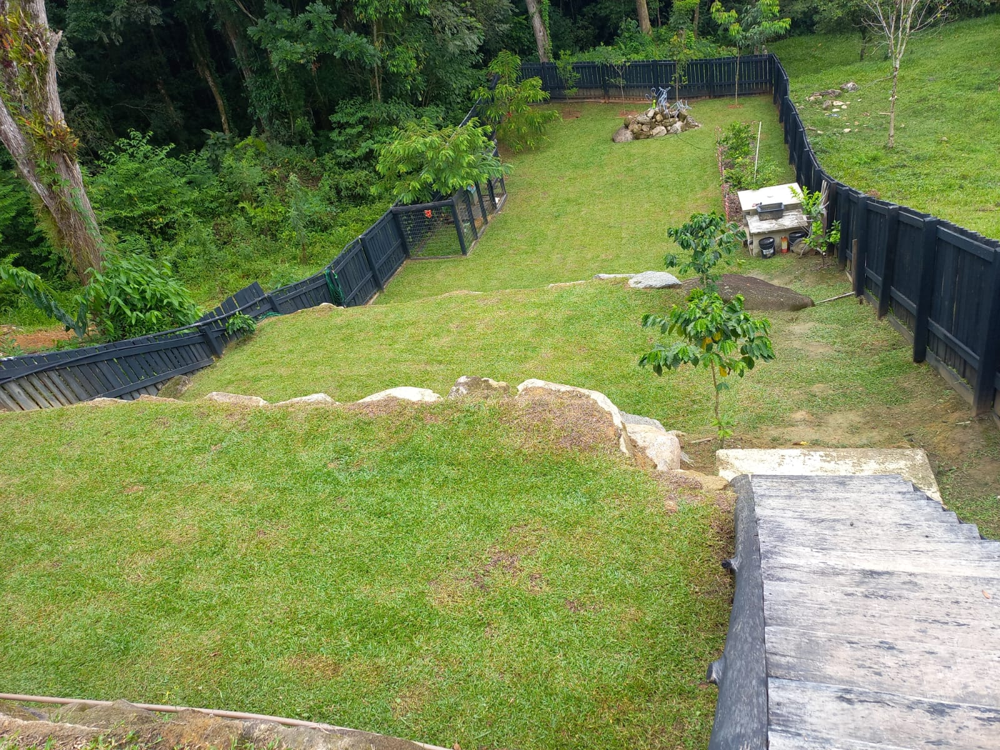
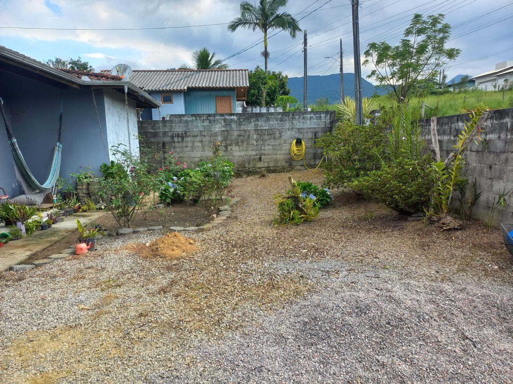
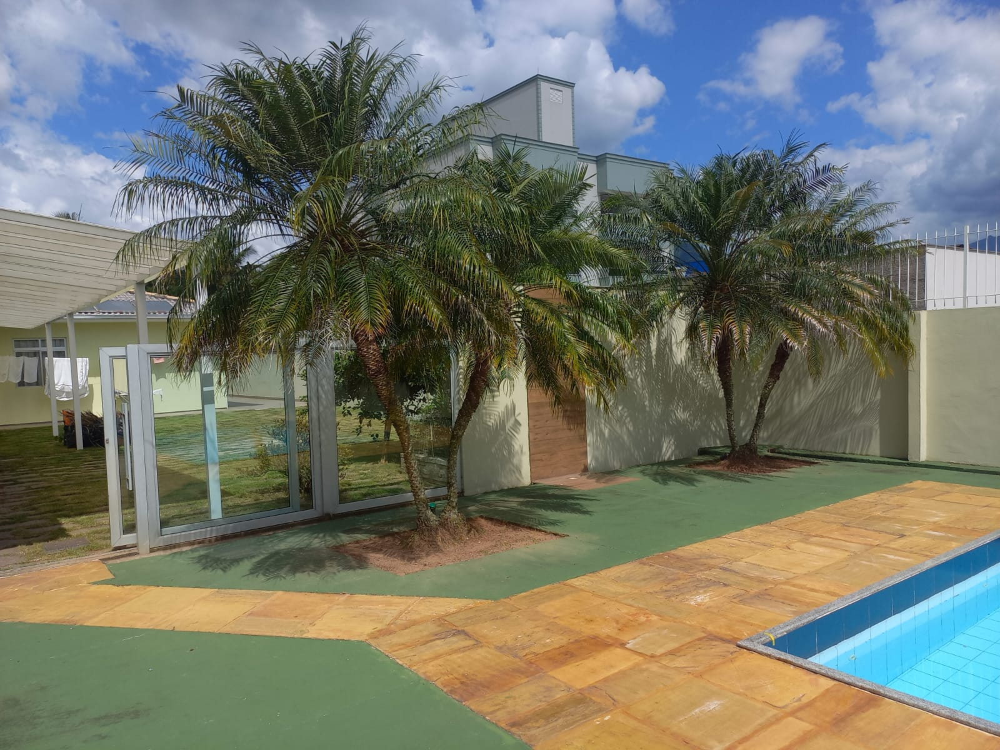
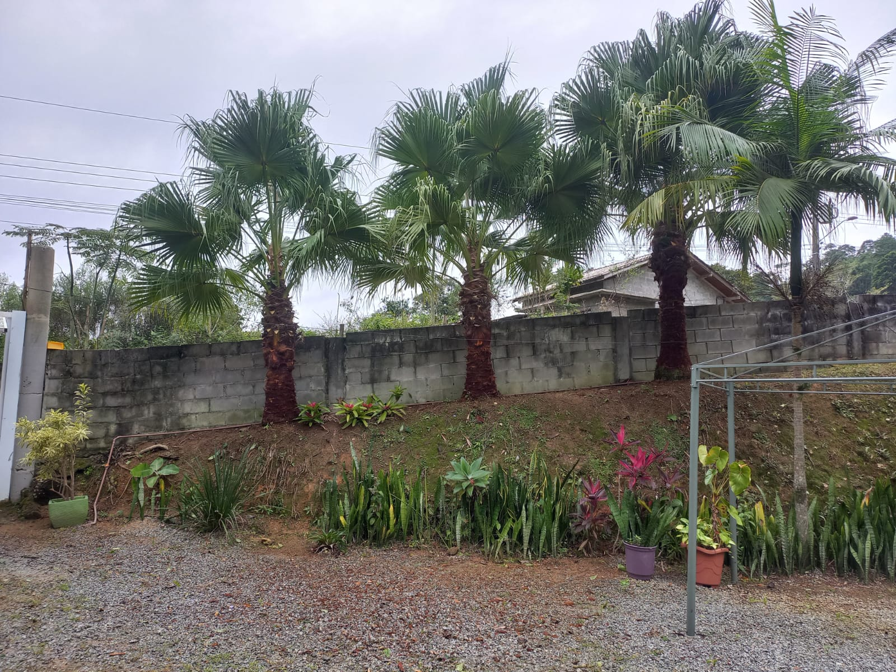
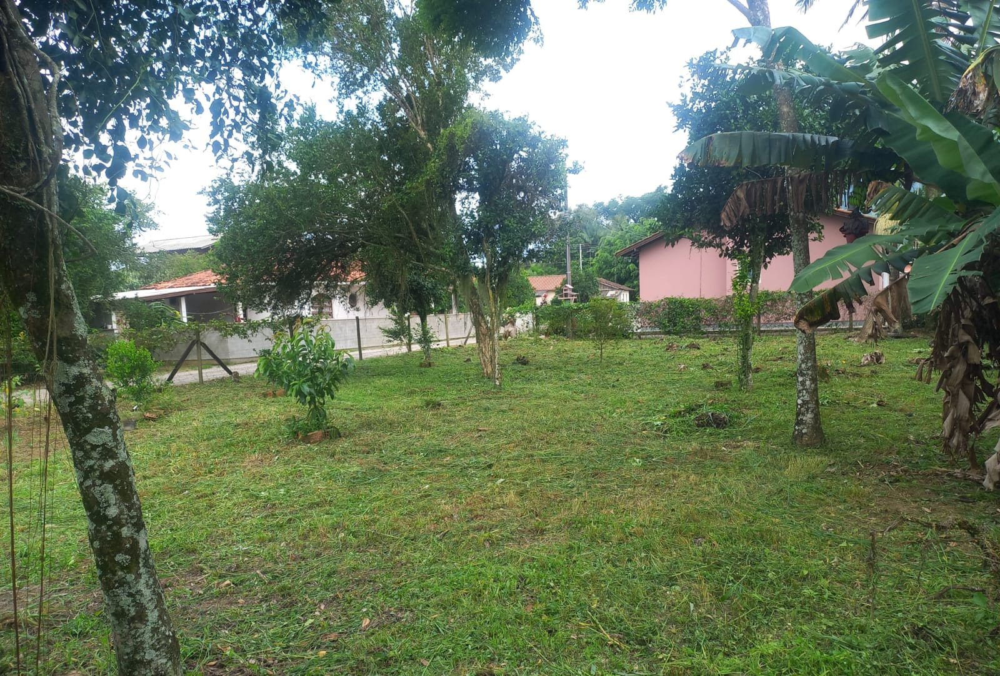
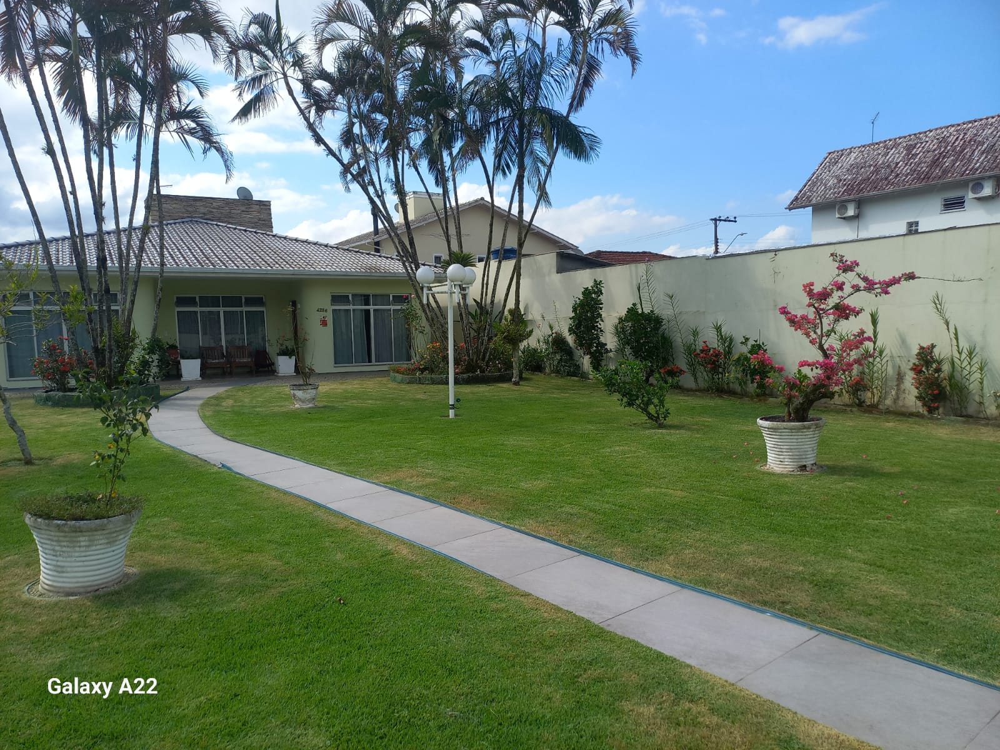
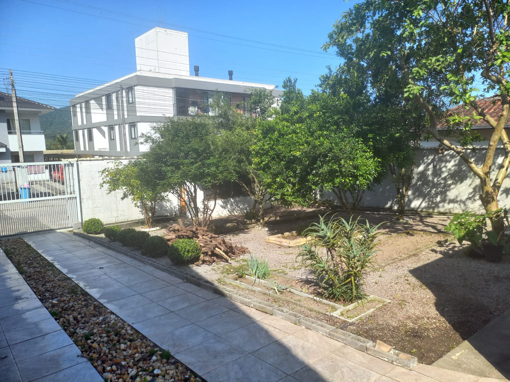
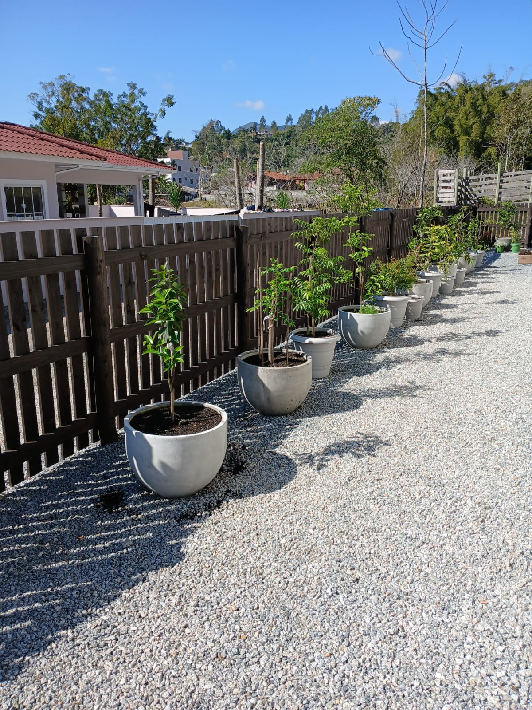
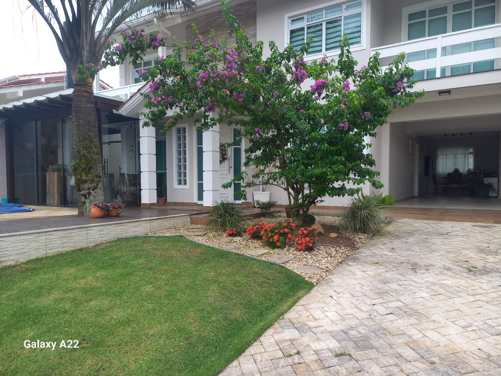
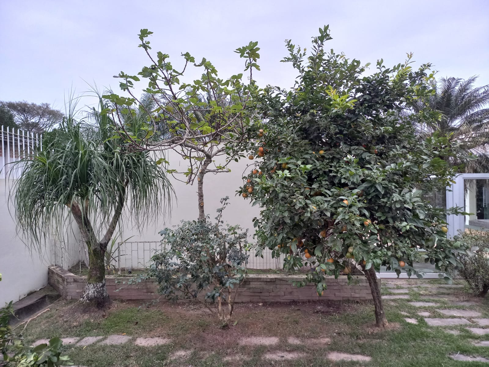
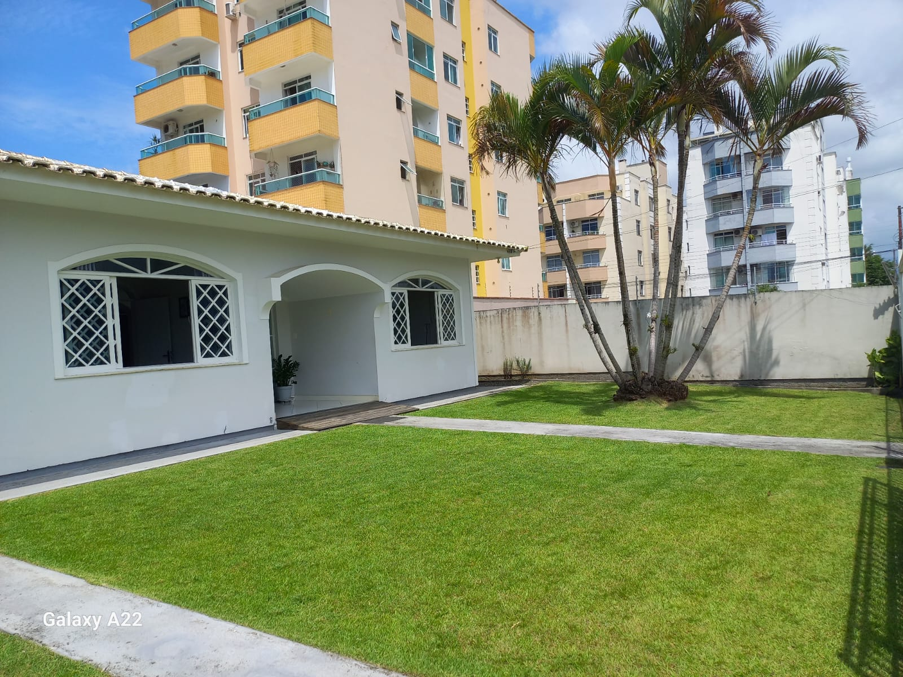
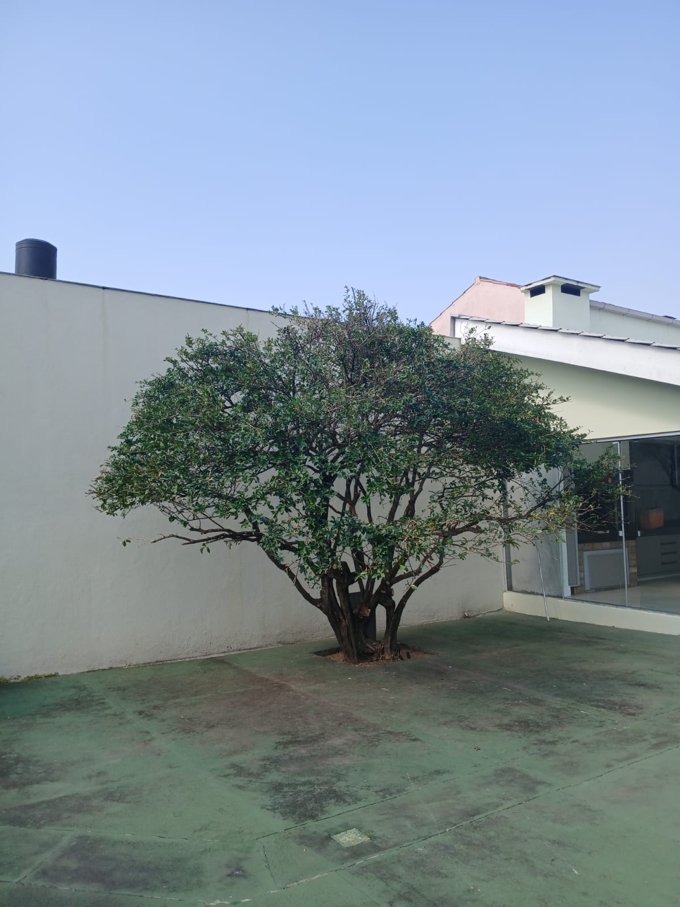